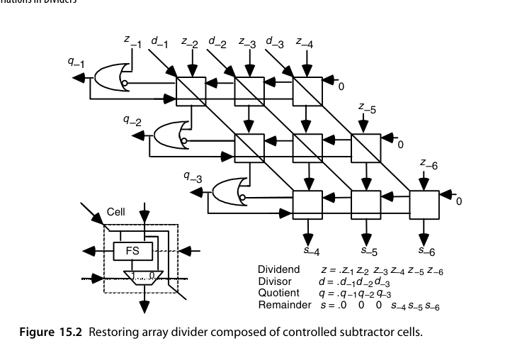
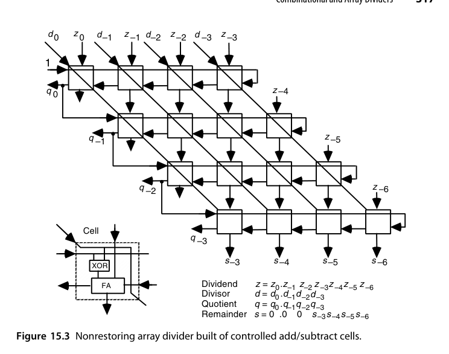
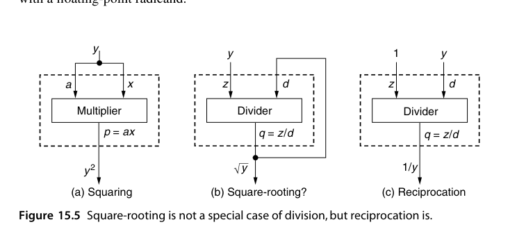
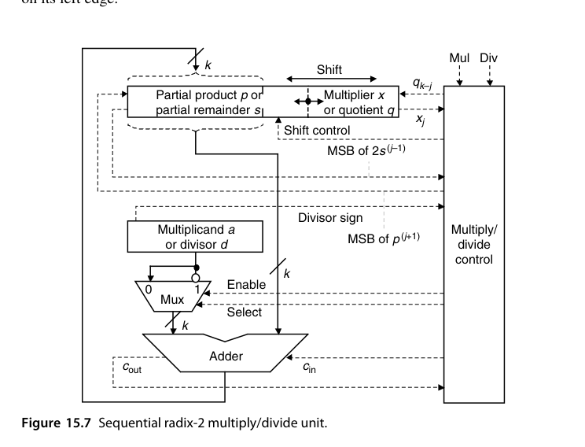
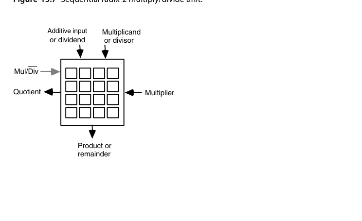
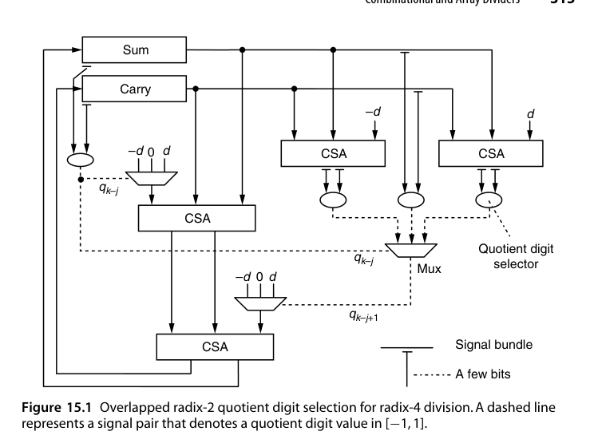
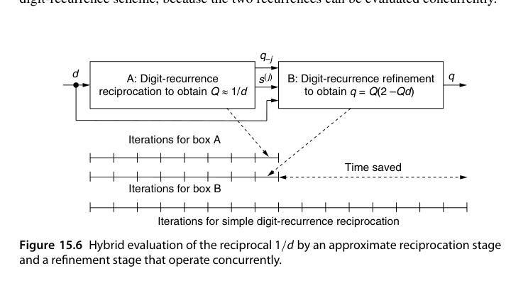

第15章 除法器的变体（Variations in Dividers）
本章导读
高基数 SRT 之外，除法还有几条重要的提速与特化路线：预缩放（让商选择不依赖除数）、重叠商选择（并行猜两位）、组合/阵列除法（纯组合逻辑展开）、模除（RNS/密码学用）、倒数（把除法变乘法）、乘除复用单元。
这些变体分属两个截然不同的动机：前三条仍在”逐位收缩”的数字递归框架内，目标是把每拍的位数做多、做快；后三条则要么换问题（换到模运算世界），要么换方法（彻底放弃数字递归，用乘法迭代逼近）。分清这条分界线，比记住每种结构的细节更重要。
15.1 预缩放除法（Division with Prescaling)
思想：先把被除数与除数同乘一个因子 \(c\)，使新除数 \(d' = c \cdot d\) 非常接近 1。此时商数字几乎等于部分余数的高位——选择函数不再依赖除数，选择表退化为几条固定分界，基数可以做得更高。
代价：两次预乘（被除数、除数各一次）+ 因子 \(c\) 的获取（查表或小计算）。净效果：把”每拍的复杂选择”换成”开头的一次性预变换”，高基数下划算。
这种”预处理换取后续简化”的取舍值得量化地看。不预缩放时，每一次迭代都要用 \(\hat p\) 和 \(\hat d\) 两个量去查表；预缩放后 \(\hat d\) 的信息被”吸收”进常数里，选择只需要看 \(\hat p\) 的高几位——表项数从”\(\hat p\) 位数 + \(\hat d\) 位数”的指数级降到只与 \(\hat p\) 位数有关，节省是指数级的。而付出的代价是一次乘法的延迟，摊到 \(k/\log_2 r\) 次迭代上，只要基数足够高就完全划得来。
预缩放把 p-d 图里的分界线从”随 \(d\) 发散的一族斜线”压成”几条水平线”——这正是图 14.3 中 radix-2 常数阈值成立的原因。radix-2 之所以免费获得这种简化，就是因为它的 \(d\) 区间本来就够窄；预缩放做的事，不过是把这种”窄区间”通过乘法人工制造出来。
15.2 重叠商数字选择（Overlapped Quotient Digit Selection）
用两套（或多套）radix-2/radix-4 的选择逻辑错位并行：第一级用部分余数高位选商，第二级同时针对第一级的两种可能结果预选——类似 carry-select 的”两份都算”。两级错位重叠后，等效于更高基数，但每级选择逻辑保持小巧。radix-8/16 除法器的实用实现多走这条路。
图 15.1（见本章插图区）给出了这个结构的完整形态，值得逐块读一遍：左上角是第一级商数字选择逻辑，输入取自 sum 与 carry 寄存器（以进位保存形式共同表示部分余数）的前几位；右上角是两个 CSA，分别针对 \(q_{k-j} = 1\) 与 \(q_{k-j} = -1\) 计算新部分余数的前几位——\(q_{k-j}=0\) 的情形不需要任何计算；随后是三份商选择逻辑副本，分别求出三种情形下的下一个商数字 \(q_{k-j+1}\)；最后由 \(q_{k-j}\) 的真实取值从三个预估值中选一个出来。
这背后是一条非常重要的工程规律：“提前算好可能用不上的值”这类投机式计算（speculative computation）在现代数字系统中被广泛使用，因为它的收益（把选择逻辑从关键路径上摘下来）往往大于成本（多算的电路）。但收益不是白来的：多出来的电路与互连既占面积也耗能量。先进数字系统的设计因此永远是一场”速度 / 面积 / 功耗”的三角平衡（第 26 章会专门讨论降功耗技术）。
15.3 组合与阵列除法器（Combinational and Array Dividers)
把 \(k\) 拍迭代空间展开：\(k\) 级”试减-选择”单元排成阵列，纯组合逻辑一次出商。结构与阵列乘法器对偶（除法是乘法的逆过程），延迟 \(O(k^2)\) 级门——面积大、延迟高，只在特殊场景（如单拍必须出结果的小位宽除法、或教学演示对偶性）使用。
理论上，把 15.2 节的重叠选择推到极致——一个周期内产生全部 \(k\) 位商——是可行的，但代价陡增：投机逻辑会像树一样分叉，纯组合除法器的复杂度随 \(k\) 指数增长。作为对照，全组合树形乘法器的延迟是 \(O(\log k)\)、代价是 \(O(k^2)\)；而除法过程的理论研究给出的是：对数时间除法器可以造出来，但代价会达到 \(O(k^4)\)；若把延迟放宽到 \(O(\log k \log\log k)\)，渐近复杂度才回到与乘法器同阶。可惜的是，这些理论构造没有一个通向实用的电路设计。实用的阵列除法器用的是另一种思路：把单元做得像阵列乘法器那样规整。
图 15.2 是由可控减法单元（controlled subtractor cell）构成的恢复式阵列除法器。每个单元含一个全减器（FS）和一个二选一 mux：当一行单元的控制输入广播为 0 时，单元的垂直输入（部分余数位）原样下传；否则把对角输入（除数位）从部分余数中减去、把差值下传。这行的布局与第 13 章图 13.1 的除法则位点图极为相似——这不是巧合，阵列除法器本质上就是把位点图”固化”成硬件。每一行单元完成一次试探减，结果的符号既决定下一个商位，也决定是”原部分余数”还是”试探差”被送到下一行。

阵列除法器与阵列乘法器的相似性有一点容易误导人：单元数量相同、单元复杂度相当，但关键路径差别巨大。\(k\times k\) 阵列乘法器的关键路径只穿过 \(O(k)\) 个单元，而图 15.2 的关键路径要穿过全部 \(k^2\) 个单元——因为借位信号在每一行内部都要行波传播。结果是阵列除法器又慢又贵，性价比不佳。图 15.3 是它的”姊妹”版本——非恢复式阵列除法器：单元复杂度与图 15.2 大体相当，但要多用一些单元来处理额外的符号位以及部分余数的最终修正（最后一行）；单元里的 XOR 门充当选择性取补器，把除数或其补码送给全加器（FA），从而根据上一行部分余数的符号决定做加法还是减法。延迟仍是 \(O(k^2)\)。

如果确实要做大量除法，流水化能显著改善阵列除法器的吞吐：例如在图 15.2 每一行单元的输出线上插锁存器，输入数据率就由”单行的借位传播延迟”决定，此时性价比大幅提升——不过仍比不上流水化的阵列乘法器。想彻底消除每行的进位/借位传播，可以让部分余数在行间以进位保存形式传递，但每行的进位出（借位出）仍然必须知道，否则无法确定下一行该做哪种操作。可以用跨行的进位/借位预测电路来获得这个信号，然而预测电路是树形结构、需要长连线，会大幅增加版图面积，把规整布局的速度优势抵消掉一大半；用 radix-2 或高基数 SRT 从少量高位估计商数字也能简化行间逻辑，却要求对冗余商做更复杂的最终转换，且连线会把版图弄得不规整。
乘法有树形乘法器，除法却没有对应的”树形除法器”，原因在第 13 章已埋下：除法的各操作数不是先验已知的，商数字必须逐位确定，这种”逐位收缩”的串行本质无法靠树的并行性消除。这是除法比乘法更难的根源，也是为什么许多现代处理器宁愿改用基于乘法的方法（第 16 章）来实现高性能除法——用若干次乘法迭代逼近商，比硬造一个全组合除法器划算得多。
15.4 模除法器与模约简器（Modular Dividers and Reducers)
- 模约简（modular reduction）：\(x \bmod m\)，\(x\) 是 \(2k\) 位——本质是”只要余数的除法”，逐位/逐块折叠（第 4 章的 \(2^k \pm 1\) 技巧）或 Barrett 约简（乘倒数逼近）；
- 模除（modular division）：\(x / y \bmod m\) 即 \(x \cdot y^{-1} \bmod m\)——核心是模逆，用扩展欧几里得或 Fermat 小定理（\(y^{-1} = y^{m-2}\)）计算，密码硬件的关键操作。
Barrett 约简与 Montgomery（12.4 节）是免除法模运算的双璧：一个用倒数乘法逼近商，一个变换数域。
先明确定义。给定 \(z\) 与 \(d \ge 0\)，模除法器计算 \(q = \lfloor z/d \rfloor\) 与 \(s = \langle z \rangle_d\)。注意商按定义是整数，但输入 \(z\)、\(d\) 不必是整数，例如 \(\lfloor -3.76/1.23 \rfloor = -4\)、\(\langle -3.76 \rangle_{1.23} = 1.16\)。\(z\) 为正时模除法与普通整数除法相同；带小数的定点数也能用整数除法算法求出 \(q\) 与 \(s\)（把小数点”记在心里”）。但对负的 \(z\)，普通除法给出负余数，而模运算的余数永远非负——所以必须在迭代之后加一个修正步骤：只要最终余数为负，就给它加上 \(d\)、同时从整数商里减去 1。这与第 13 章讨论的截断/地板语义之争是同一个问题。
许多场景只关心商 \(q\) 或只关心余数 \(s\) 之一：只求 \(q\) 时仍得做一次完整除法（余数是副产品），但只求 \(\langle z \rangle_d\) 时模约简可能比完整除法更快、更省。对常数除数取模第 4.3 节已讲过；对任意的 \(2k\) 位被除数 \(z\) 与 \(k\) 位除数 \(d\)，把 \(z\) 拆成高半 \(z_H\) 与低半 \(z_L\)，则
\[ \langle z \rangle_d = \langle z_H 2^k + z_L \rangle_d = \langle z_H (2^k - 1) + z_H + z_L \rangle_d \]
即模约简可转化为”\(z_H\) 乘以 \(2^k-1\) 再模 \(d\)“加上两次模加。两个加法项中，一项可直接用作累积部分积的初值；若模乘法器用存储进位累积部分积，则两项都能在开头一次性装进去。若 \(d\) 是位规格化的（最高位为 1），还有更漂亮的特例 \(\langle 2^k \rangle_d = 2^k - d\)（即 \(d\) 的 2 的补码），于是让 \(z_H\) 与 \(2^k-d\) 做模 \(d\) 乘法、把累积部分积初值设为 \(z_L\) 即可。不过要提醒一句：这些方法只在”手里没有、也不打算有快速硬件除法器”时才值得考虑。
对数百位宽的大操作数，Montgomery 模约简才是正解。它通常与模乘法配合使用，而模乘法是模幂运算的基本操作——公钥密码的核心。以 \(q = ax \bmod m\)（\(m\) 为奇数）为例，把 \(a, x, q\) 等模 \(m\) 的数都表示成 \(k\) 位伪剩余（pseudoresidue），允许”余数”\(\ge m\)（例如模 13 时 15 就是一个合法的 4 位伪剩余）。Montgomery 乘法并不直接给出 \(ax \bmod m\)，而是给出 \(ax/R \bmod m\)，其中 \(R\) 是常数（radix-2 情形即 \(R = 2^k\)）。看一个完整的小例子：取 \(r = 2\)、\(m = 13\)、\(R = 16 = 2^4\)，则 \(R^{-1} = 9 \pmod{13}\)（因为 \(16 \times 9 \equiv 1\)）。以 \(a=10\)、\(x=11\) 为例，运算是”普通乘法算法配右移”，但每步右移之前先保证累积部分积是 \(r\) 的倍数（本例中即偶数）——当移位后的部分积 \(2p^{(i)}\) 是奇数时就加上 \(m\) 再右移（加 \(m\) 不改变模 \(m\) 的结果）。结果是 \((1111)_2\)，作为模 13 的伪剩余等价于 2；验证：\(10\times 11\times 9 \bmod 13 = 990 \bmod 13 = 2\)。要把 \(t = ax/R \bmod m\) 还原成 \(ax \bmod m\)，只需把 \(t\) 乘以 \(R^2 \bmod m\) 而不是 \(R\)，得到 \(tR^2/R \bmod m = tR \bmod m\)；本例中 \(R^2 \bmod m = 256 \bmod 13 = 9\)。
因为要走两步 Montgomery 乘法，单次模乘用它并不划算。真正让它成为密码硬件事实标准的是另一条性质：每一步”是否加 \(m\)“的决定只取决于部分积的最低有效位（LSB）。而在存储进位表示中，最高位是未知的（进位随时可能改变高位），最低位却是现成可用的。这意味着整个模乘过程可以全程使用进位保存加法、一次进位传播都不做——与高基数除法器”用截断高位做选择”的困境恰好相反。存在多次模乘时收益更直接：一次性把所有输入转成 Montgomery 码（M-code，即 \(yR \bmod m\)）、连续做模乘、最后再转换回来即可。
15.5 倒数的特殊情形（The Special Case of Reciprocation)
\(1/d\) 是很多算法的入口（有了倒数，除法 = 乘法）。硬件求倒数的经典路线：
- 查表粗值：用 \(d\) 的高位查 ROM 得初始近似 \(r_0\)（如 8 位精度）；
- Newton-Raphson 迭代：\(r_{i+1} = r_i (2 - d \cdot r_i)\)——每次迭代精度平方增长（8→16→32→64 位），且只用乘法与减法（可用 FMA！）；
- 迭代误差分析与最终舍入（第 16 章系统展开）。
先澄清一个常见的类比错误：开平方不是除法的特例，但求倒数确实是。与”乘法器可以直接当平方器用”不同，“把除法器的被除数接成常数 1 就得到开方器”这种想法行不通——原因要到第 21 章讨论浮点之后再讲。而求倒数则完全可以这样做，只是我们期望一个专用倒数器的成本与延迟都明显优于通用除法器。下面假设 \(d\) 是无符号、位规格化的小数，\(d \in [0.5, 1)\)（即 \((0.1xxx\ldots)_2\)），其倒数据此落在 \([1,2]\) 内；为简化讨论忽略 \(d = 0.5\) 这个特例。

一个令人失望的结论是：单纯用数字递归求倒数，相比除法没有任何时间或硬件上的节省。 虽然初始部分余数是个特殊值（2 倍的 1），这点优势几乎立刻被用光——后续所有部分余数都是普通值，而倒数数字的选择与商数字选择面临完全相同的困难。真正有效的做法是把数字递归与别的方案混合：先用数字递归求出大约一半的倒数位，构成 \(1/d\) 的近似值 \(Q\)，再用一个精化步骤补齐剩下的位。可以证明，若 \(Q\) 逼近 \(1/d\) 的误差不超过 \(2^{-k/2}\)，则 \(t = Q(2 - Qd)\) 对 \(q\) 的逼近误差不超过 \(2^{-k}\)。\(Q\) 的各比特用常规除法递归产生，而 \(t\) 也用数字递归同步算出，用的正是选定的倒数位 \(q_{-j}\)：
\[ s^{(j+1)} = 2s^{(j)} - q_{-j}d \quad (2s^{(0)} = 1), \qquad t^{(j+1)} = 4t^{(j)} + q_{-j}\left(4s^{(j)} - q_{-j}d\right) \quad (t^{(0)} = 0) \]
关键在于这两个递归可以并发求值——图 15.6（见本章插图区）中，A 框（数字递归求 \(Q\)）与 B 框（精化求 \(q = Q(2-Qd)\)）并行推进，总时间约为简单数字递归的一半。近似倒数还可以查表得到（第 16 章讨论），通用查表函数求值方法在第 24 章；低精度近似 \(1/d\) 也可以直接用一个定制组合逻辑电路产生。
Newton 迭代的”自校正”性质（误差二次方消失）配合 FMA 硬件，是现代 GPU/CPU 除法与开平方指令（rcp、rsqrt 系列）的内部实现方式。游戏图形学著名的”快速逆平方根”魔数算法，本质就是一次精心设计的查表 + 一步 Newton。
15.6 乘除复用单元（Combined Multiply/Divide Units)
乘法器与除法器共享大部分数据通路（移位寄存器、加减法器、压缩树），合并设计可省 30-50% 面积：
- 乘法：部分积累加（正向迭代）；
- 除法：部分余数更新（逆向迭代）；
- 控制状态机复用计数器与移位路径。
在面积敏感的嵌入式核心里，“乘除一体”是常见配置；高性能核则倾向于分开（时序与流水自由度更大）。
这种相似性是贯穿全书的：除了除法器里的商数字选择逻辑在乘法器中没有对应物，两者所需的硬件元件几乎一模一样——从基本 radix-2 单元、到高基数设计、再到阵列实现都成立，根本原因还是那句老话：乘法与除法本质上都是多操作数加法问题（图 13.15）。图 15.7 给出的是一个把第 9 章图 9.4a 的乘法器与第 13 章图 13.10 的非恢复除法器合并而成的 radix-2 乘除单元。注意两处关键合并：乘数（商）寄存器与部分积（余数）寄存器已合为一个，二者的移位分界用虚线标出；图 13.10 中那个用来暂存 \(2s^{(j-1)}\) 最高位的额外触发器，已被收进”乘除控制单元”的逻辑里。

高基数版本同样可以合并，而且收益更大。一个 radix-4 Booth 乘法器（图 10.9）与一个基于商数字集 \([-2,2]\) 的 radix-4 SRT 除法器（图 14.4 的 radix-4 版本）可以合并成一个 radix-4 乘除单元：因为重编码后的乘数与冗余商使用同一个数字集 \([-2,2]\)，所以被乘数与除数的倍数选择电路可以大量共享——这是”数字集对齐”带来的结构性红利。部分树/全树乘法器与超高基数除法器也能合并：利用乘法器压缩树的多操作数加法能力产生一个相当精确的除数倒数 \(1/d\) 估计值，再跟几次乘法得到商，这正是第 16 章”基于乘法的除法”的入口。最后，若要求一个单元既能当阵列乘法器、又能当阵列除法器用，它的输入/输出规范要统一设计——图 15.8 给出了这样一个通用电路的 I/O 规格：同一组引脚、两种工作模式，是用面积换灵活性的典型做法。

合并的判据不只是面积，预期应用中数值运算的密度才是关键：如果乘除混用的比例很高，合并单元能”顺手”复用数据通路；如果乘除各自的吞吐要求都很高，那么用两个合并单元比”一个乘法器 + 一个除法器”能提供更多并发执行的机会——因为两个合并单元可以同时执行两条乘法。这也解释了为什么高性能核里常见”两个乘除单元”而不是”一乘一除”。
本章小结
- 预缩放：把选择函数的除数依赖性”预付”掉，表项数从指数级降到只与部分余数位数有关。
- 重叠选择：小选择器错位拼出高基数，投机计算换速度，代价是面积与功耗。
- 阵列除法：单元与乘法器同构，但关键路径穿过全部 \(k^2\) 个单元；除法没有树形版本。
- 模约简：\(\langle z \rangle_d = \langle z_H(2^k-1) + z_H + z_L \rangle_d\)；Montgomery 用 LSB 判定加 \(m\)，天然适配进位保存。
- 倒数：数字递归本身不省，混合法（近似 \(Q\) + 精化 \(Q(2-Qd)\)）可把时间减半；Newton 迭代误差平方收敛，FMA 的天然用户。
- 乘除合并：数字集对齐（Booth \([-2,2]\) 与 SRT \([-2,2]\)）可共享倍数选择电路。
原书插图

